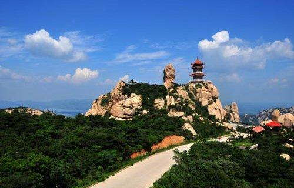

天然矿石
三生石是一种泥质石灰岩，呈褐红、朱红、玄黄、土黄等色。三生石产于孔子故里曲阜城北的九仙山上，其质地柔软、文理精腻，山体前面的三生石为褐红色，称为三生石阳石，经打磨抛光之后可现类似于木纹的图案或黑点点缀，所以又有石中紫檀的美誉；而山背面的石头多呈玄黄色或土黄色，被称为三生石阴石，阴石亦有黑色天然画面装点，大块儿石头经打磨后可构成高山流瀑、古木枯枝、飞禽走兽、风流人物等图案，清晰逼真，各得其妙，有水墨画的清高淡雅。三生石中含有朱砂、石英、方解石、辉锑矿、地开石、高岭石等成分。

传说由来
相传女娲在补天之后，开始用泥造人，每造一人，取一粒沙作计，终而成一硕石，女娲将其立于西天灵河畔。此石因其始于天地初开，受日月精华，灵性渐通。不知过了几载春秋，只听天际一声巨响，一石直插云霄，顶于天洞，似有破天而出之意。女娲放眼望去，大惊失色，只见此石吸收日月精华以后，头重脚轻，直立不倒，大可顶天，长相奇幻，竟生出两条神纹，将石隔成三段，纵有吞噬天、地、人三界之意。女娲急施魄灵符，将石封住，心想自造人后，独缺姻缘轮回神位，便封它为三生石，赐它法力三生诀，将其三段命名为前世、今生、来世，并在其身添上一笔姻缘线，从今生一直延续到来世。为了更好的约束其魔性，女娲思虑再三，最终将其放于鬼门关忘川河边，掌管三世姻缘轮回。当此石直立后，神力大照天下，跪求姻缘轮回者更是络绎不绝。
历史典故
典故来源
唐代隐士李源，住在慧林寺，和住持圆观交好，互为知音。两人相约去四川峨眉山游玩，圆观想从道长安，从北部陆路入川。在李源的坚持下，两人从从长江水路入川。在路上河边遇到一个怀孕三年的孕妇。圆观看到这个孕妇就哭了，说他就是因为这个原因不愿意走水路，因为他注定要做这个妇人的儿子，遇到了就躲不开了。他和李源相约在13年后杭州三生石初相见。当晚圆观圆寂，孕妇也顺利产子。十三年后，李源如约来到三生石，见到一个牧童唱到“三生石上旧精魂，赏月吟风莫要论；惭愧故人远相访，此身虽异性长存。”李源与之相认，牧童说他就是圆泽，但是尘缘未了，不能久留，唱到：“身前身后事茫茫，欲话因缘恐断肠。吴越江山游已遍，却回烟棹上瞿塘。”唱完就离去了。
典故
三生曾识 三生溪桥话别 三生石 三生石上 三生路 石上三生
李源
《太平广记》卷三百八十七〈悟前生一·圆观〉～3089～
圆观者，大历末，洛阳惠林寺僧。能事田园，富有粟帛。梵学之外，音律贯通。时人以富僧为名，而莫知所自也。李谏议源，公卿之子，当天宝之际，以游宴歌酒为务。父●居守，陷于贼中，乃脱粟布衣，止于惠林寺，悉将家业为寺公财。寺人日给一器食一杯饮而已。不置仆使，绝其知闻。唯与圆观为忘言交，促膝静话，自旦及昏。时人以清浊不伦，颇招讥诮。如此三十年。二公一旦约游蜀州，抵青城峨嵋，同访道求药。圆观欲游长安，出斜谷；李公欲上荆州，出（「出」字原缺，据明抄本补。）三峡。争此两途，半年未诀。李公曰：「吾已绝世事，岂取途两京？」圆观曰：「行固不由人，请出从三峡而去。」遂自荆江上峡。行次南洎，维舟山下。见妇女数人，鞗达锦铛，负瓮（「瓮」原作「人」，据明抄本改）而汲。圆观望而泣下曰：「某不欲至此，恐见其妇人也。」李公惊问曰：「自此峡来，此徒不少，何独泣此数人？」圆观曰：「其中孕妇姓王者，是某托身之所。逾三载，尚未娩怀，以某未来之故也。今既见矣，即命有所归。释氏所谓循环也。」谓公曰：「请假以符咒，遣某速生。少驻行舟，葬某山下。浴儿三日，亦访临。若相顾一笑，即其认公也。更后十二年，中秋月夜，杭州天竺寺外，与公相见（「公相见」原作「相见公」，据明抄本改。）之期也。」李公遂悔此行，为之一恸。遂召妇人，告以方书。其妇人喜跃还家，顷之，亲族毕至。以枯鱼酒献于水滨，李公往为授朱字，圆观具汤沐，新其衣装。是夕，圆观亡而孕妇产矣。李公三日往观新儿，襁褓就明，果致一笑。李公泣下，具告于王。王乃多出家财，厚葬圆观。明日，李公回棹，言归惠林。询间观家，方知已有理命。后十二年秋八月，直诣余杭，赴其所约。时天竺寺，山雨初晴，月色满川，无处寻访。忽闻葛洪川畔，有牧竖歌竹枝词者，乘牛叩（「叩」原作「叱」，据明抄本改。）角，双髻短衣，俄至寺前，乃圆观也。李公就谒曰：「观公健否？」却问李公曰：「真信士矣。与公殊途，慎勿相近。俗缘未尽，但愿勤修，勤修不堕，即遂相见。」李公以无由叙话，望之潸然。圆观又唱竹枝，步步前去。山长水远，尚闻歌声，词切韵高，莫知所谓。初到寺前歌曰：「三生石上旧精魂，赏月吟风不要论。惭愧故人远相访，此身虽异性长存。」又歌曰：「身前身后事茫茫，欲话因缘恐断肠。吴越溪山寻己遍，却回烟棹上瞿塘。」后三年，李公拜谏仪大夫，二年亡。
圆观者，大历末，洛阳惠林寺僧。能事田园，富有粟帛。梵学之外，音律贯通。时人以富僧为名，而莫知所自也。李谏议源，公卿之子，当天宝之际，以游宴歌酒为务。父●居守，陷于贼中，乃脱粟布衣，止于惠林寺，悉将家业为寺公财。寺人日给一器食一杯饮而已。不置仆使，绝其知闻。唯与圆观为忘言交，促膝静话，自旦及昏。时人以清浊不伦，颇招讥诮。如此三十年。二公一旦约游蜀州，抵青城峨嵋，同访道求药。圆观欲游长安，出斜谷；李公欲上荆州，出（「出」字原缺，据明抄本补。）三峡。争此两途，半年未诀。李公曰：「吾已绝世事，岂取途两京？」圆观曰：「行固不由人，请出从三峡而去。」遂自荆江上峡。行次南洎，维舟山下。见妇女数人，鞗达锦铛，负瓮（「瓮」原作「人」，据明抄本改）而汲。圆观望而泣下曰：「某不欲至此，恐见其妇人也。」李公惊问曰：「自此峡来，此徒不少，何独泣此数人？」圆观曰：「其中孕妇姓王者，是某托身之所。逾三载，尚未娩怀，以某未来之故也。今既见矣，即命有所归。释氏所谓循环也。」谓公曰：「请假以符咒，遣某速生。少驻行舟，葬某山下。浴儿三日，亦访临。若相顾一笑，即其认公也。更后十二年，中秋月夜，杭州天竺寺外，与公相见（「公相见」原作「相见公」，据明抄本改。）之期也。」李公遂悔此行，为之一恸。遂召妇人，告以方书。其妇人喜跃还家，顷之，亲族毕至。以枯鱼酒献于水滨，李公往为授朱字，圆观具汤沐，新其衣装。是夕，圆观亡而孕妇产矣。李公三日往观新儿，襁褓就明，果致一笑。李公泣下，具告于王。王乃多出家财，厚葬圆观。明日，李公回棹，言归惠林。询间观家，方知已有理命。后十二年秋八月，直诣余杭，赴其所约。时天竺寺，山雨初晴，月色满川，无处寻访。忽闻葛洪川畔，有牧竖歌竹枝词者，乘牛叩（「叩」原作「叱」，据明抄本改。）角，双髻短衣，俄至寺前，乃圆观也。李公就谒曰：「观公健否？」却问李公曰：「真信士矣。与公殊途，慎勿相近。俗缘未尽，但愿勤修，勤修不堕，即遂相见。」李公以无由叙话，望之潸然。圆观又唱竹枝，步步前去。山长水远，尚闻歌声，词切韵高，莫知所谓。初到寺前歌曰：「三生石上旧精魂，赏月吟风不要论。惭愧故人远相访，此身虽异性长存。」又歌曰：「身前身后事茫茫，欲话因缘恐断肠。吴越溪山寻己遍，却回烟棹上瞿塘。」后三年，李公拜谏仪大夫，二年亡。
三生石上旧精魂，赏月吟风莫要论。
惭愧故人远相访，此身虽异性长存。
身前身后事茫茫，欲话姻缘恐断肠。
吴越山川寻已遍，却回烟棹上瞿塘。
李源和圆观和尚〈又传为“圆泽”〉的三世友情故事解说
富家子弟李源，因为父亲在变乱中死去而体悟人生无常，发誓不做官、不娶妻、不吃肉食，把自己的家捐献出来改建惠林寺，并住在寺里修行。
寺里的住持圆泽禅师(即文中说的“圆观”)，很会经营寺产，而且很懂音乐，李源和他成了要好的朋友，常常坐着谈心，一谈就是一整天，没有人知道他们在谈什么。
有一天，他们相约共游四川的青城山和峨嵋山，李源想走水路从湖北沿江而上，圆泽却主张由陆路取道长安斜谷入川。李源不同意。圆泽只好依他，感叹地说：“一个人的命运真是由不得自己呀！”
于是一起走水路，到了南浦，船靠在岸边，看到一个穿花缎衣裤的妇人正到河边取水，圆泽看着就流下了泪来，对李源说：“我不愿意走水路就是怕见到她呀！”李源吃惊地问他原因，他说：“她姓王，我注定要做她的儿子，因为我不肯来，所以她怀孕了三年还生不下来，现在既然遇到了，就不能再逃避。现在请你用符咒帮我速去投生，三天以后洗澡的时候，请你来王家看我，我以一笑作为证明。十三年后的中秋夜，你来杭州的天竺寺外，我一定来和你见面。”
李源一方面悲痛后悔，一方面为他洗澡更衣，到黄昏的时候，圆泽就死了，河边看见的妇人也随之生产了。
三天以后李源去看婴儿，婴儿见到李源果真微笑，李源便把一切告诉王氏，王家便拿钱把圆泽埋葬在山下。
李源再也没有心思去游山，就回到惠林寺，寺里的徒弟才说出圆泽早就写好了遗书。
十三年后，李源从洛阳到杭州西湖天竺寺，去赴圆泽的约会，到寺外忽然听到葛洪川畔传来牧童拍着牛角的歌声：我是过了三世的昔人的魂魄，赏月吟风的往事早已过去了；惭愧让你跑这么远来探访我，我的身体虽变了心性却长在。
李源听了，知道是旧人，忍不住问道：“泽公，你还好吗？”
牧童说：“李公真守信约，可惜我的俗缘未了，不能和你再亲近，我们只有努力修行不堕落，将来还有会面的日子。”随即又唱了一首歌：身前身后的事情非常渺茫，想说出因缘又怕心情忧伤；吴越的山川我已经走遍了，再把船头掉转到瞿塘去吧！
牧童掉头而去，从此不知道他往哪里去了。
再过三年，大臣李德裕启奏皇上，推荐李源是忠臣的儿子又很孝顺，请给予官职。于是皇帝封李源为谏议大夫，但这时的李源早已彻悟，看破了世情，不肯就职，后来在寺里死去，活到八十岁。
圆泽禅师和李源的故事流传得很广，到了今天，在杭州西湖天竺寺外，还留下来一块大石头，据说就是当年他们隔世相会的地方，称为“三生石”。
圆泽和尚以“三生”酬报李源的友谊，其情之高，其义之厚，无法衡量，可谓情天义地。这个故事之所以持续流传，反映的正是人们的这种美好愿望。和尚圆泽告诉李源此事，只是想让李源相信人的轮回，相信三世因果。圆泽第一世没有找到他的姻缘，他就出家为僧。第二世，遇到李源的时候，他还是没有找到他的姻缘，只好唱道“身前身后事茫茫，欲话因缘恐断肠。吴越江山游已遍，却回烟棹上瞿塘。”没有找到，他只能继续出家，等待下一生的寻觅。三生石，三生有幸，其实就是人的三次轮回，石头，比喻为“坚固”，坚定的信念。如此而已！
三生石的传说如此美妙，但究其本质亦属虚幻之说。从哲学的眼观来看，关于“三生石”的传说也反映了中国人对于生命永恒的看法和真性不朽的观点，正是透过这种“轮回”与“转世”的观念，中国人建立了深刻的伦理、生命，乃至于宇宙永恒发展变化的理念。这种理念对我们的思想意识，乃至于日常生活影响至深。
后话—未完未了的故事
后来，这个本为“须眉友情”的美妙故事，经《红楼梦》改造为“只因西方灵河岸上三生石畔，有绛珠草一株……受天地精华……雨露滋养……修成个女体”，就演绎成不折不扣的“男女爱情”绝唱版，三生石也就成了姻缘的铁定象征，所谓“缘定三生”，就是指前生、今生及来生的幸福姻缘！
典籍记录
这个故事最早见于唐人袁郊《甘泽谣·圆观》，僧人的名字叫圆观，而非园泽。亦见于《西湖梦寻·三生石》和清初古吴墨浪子《西湖佳话·三生石迹》。宋朝文学家苏东坡的《僧圆泽传》流传最广，也题刻于西湖三生石上。林清玄亦作《三生石上旧精魂》，根据的就是苏东坡的版本。
史料记载
师名圆观，居慧林，与洛京守李源为友，约往蜀山峨嵋礼普贤大士。
师欲行斜谷道，源欲泝（泝，同溯，逆水而行）峡。师不可， 源强之，乃行。舟次南浦，见妇人锦裆负婴汲水，师见而泣曰：“吾始不欲行此道者，为是也，彼孕我已三年，今见之不可逃矣，三日浴儿时，顾公临门，我以一笑为信。十二年后，钱唐天竺寺外，当与公相见。”言讫而化。妇既乳儿，源往视之，果笑，寻即回舟。
如期至天竺，当中秋月下，闻葛洪井畔有牧儿扣角而歌曰：“三生石上旧精魂，赏月吟风不要论，惭愧故人远相访，此身虽异性长存。”源知是师，乃趋前曰：“泽公健否？”
儿曰：“李公真信士也，我与君殊途，切勿相近，唯以勤修勉之。”又歌曰：“身前身后事茫茫，欲话因缘恐断肠，吴越江山寻已遍，欲回烟棹上瞿塘。”遂去，莫如所之。
词语寓意
情义守信
有人说，这是因为历代中国人都十分看重情义。和尚圆泽以“三生”酬报李源的友谊，其情之高，其义之厚，无法衡量，可谓情天义地，这个故事之所以持续流传，反映的正是人们的这种美好愿望。
实际上，和尚圆泽告诉李源此事，只是让他相信人的轮回，相信三世因果。圆泽第一世没有找到他的姻缘，他就出家为僧。第二世，遇到李源的时候，他还是没有找到他的姻缘，只好唱道“身前身后事茫茫，欲话因缘恐断肠。吴越江山游已遍，却回烟棹上瞿塘。”没有找到，他只能继续出家，等待下一生的寻觅。三生石，三生，其实就是人的三次轮回，石头，比喻为“坚固”，坚定的信念。如此而已！
生命永恒
三生石的传说如此美妙，但究其本质亦属虚幻之说，但从哲学的眼观来看，关于三生石的传说其实是反映了中国人对于生命永恒的看法、真性不朽的看法，而正是透过这种“轮回”与“转世”的观念，中国人建立了深刻的伦理、生命，乃至于宇宙永恒发展变化的理念。
中国所建立的这种理念对我们的思想意识，乃至于日常生活影响至深。
文化影响
“三生”源于佛教的因果轮回学说，而三生石又产于儒家思想创始人孔子故里的九仙山上，传说中的缘池仙翁又为道家的代表。中国的宗教文化经过长期的演变之后，儒、道、 释三家已经互相渗透、互相同化，某种程度上已经“三教一体”了，所以，三生石更是一种灵石。集“佛道”“人道”“天道”于一体的三生灵石面前，还有什么“邪”与“噩”可言呢？佛家讲究“治心”，儒家叫做“正心” ，道家追求“炼心”。在这背后，儒家讲“治世”，道家讲“治身”，佛家讲“治心”。再换一个角度来说，三家对人生的概括，儒家讲的是“未知生焉知死”、“独善其身，兼济天下”，不要去着迷于云里雾里的事情，而 要重视现世的修炼；道家讲的是“穷尽变化”，努力了解世界和社会的变化规律；佛家则讲“缘起性空”，不要被外部世界纷纷扰扰的现象所迷惑。所以，集天地灵气于一体的三生石本身就是儒道释三教文化的精髓，佩戴三 生石又是明法正心、驱除邪恶、寄托希望的一种实物变现形式。
相关诗词
“只因西方灵河岸上三生石畔，有绛珠草一株，时有赤瑕宫神瑛侍者，日以甘露灌溉，这绛珠草始得久延岁月。后来既受天地精华，复得雨露滋养，遂得脱却草胎木质，得换人形，仅修成个女体，终日游于离恨天外，饥则食蜜青果为膳，渴则饮灌愁海水为汤……”（红楼梦第一回）
另有明代冯梦龙喻世明言第三十卷《明悟禅师赶五戒》以此故事为原型进行创作，现实存在。
名胜古迹
西湖
西湖十六遗迹。“三生石”位于杭州西湖的灵隐寺，寺中三生石的传说，代表了前世、今世、后世的三生石。中国古代最著名的爱情——宝黛的爱情就是从三生石畔的前生开始的。三生石位于杭州三天竺法镜寺后之莲花峰东麓，是清初古吴墨浪子《西湖佳话》中所言“西湖十六遗迹”之一。该石高三丈许，由三块天然石灰岩组成，石上镌刻“三生石”三个篆字。
杭州灵隐寺前那块写着“咫尺西天”的照壁，往右走，经“三竺灵濛”牌坊入天竺路，道旁有清可见底的小溪。走完石板路面的天竺路，便到了三天竺法镜寺，三天竺法镜寺正大门围墙左边有一座小桥，过桥，由小路上山，石阶上杂草丛生，最特别的是，夏秋之季，石阶上有很多很长的有着黄黑相间花纹的“百足虫”，象蜈蚣一类的“长虫”，似乎趴在石阶上是在乘凉。只五六分钟，三生石就到了，石头其实是不起眼的，只是上面镌了字，便传奇了。四处少有人迹，只有些形状各异的大石头散落在沉沉的绿色里。站在这里便想起一句话“海枯石烂”，再看看这块在传说里代表了“前世、今世、后世”的三生石，身边的恋人便分外让人爱怜。现代中人，并没有奢侈的后花园可供情人们“私订终生”，但是三生石一直都是在的，仿佛就是为了聆听情人们的盟约而在这里静静立着。
三生石在与飞来峰相连接的莲花峰东麓，是“西湖十六遗迹”之一。该石高约10米，宽2米多，峭拔玲珑。石上刻有“三生石”三个碗口大小的篆书及《唐圆泽和尚 三生石迹》的碑文，记述“三生石”之由来。石上多唐、宋时的题词石刻，大多已不可辨认，只有元至正元年（1341年）秋九月太史杨瑀、翰林张翥等人的题词仍清晰可见。
九仙山
曲阜九仙山上也有一块巨大的三生石，这块三生石位于曲阜城北20公里的九仙山上，传说此山乃掌管人间缘分的“缘池仙翁”的养道修行之圣地。历朝历代都设坛焚香敬奉。现存碑记可见，清乾隆四十三年、嘉庆十七年曾多次投资复修“缘池仙洞”，直至解放初还有出家人管理。 缘池仙洞东南数里有一凌空屹立的巨石，有数米之高，上曰：“三生石”，传说是缘池仙翁洞察人间男女并安排有情人相遇的地方。
三清山
位于世界自然遗产江西三清山日上山庄西侧边，一巨石斜覆若洞，传说远古时大禹到三清山治水，与涂山氏家族的女儿“娇”联手斗赤松子门下的报雨宠物玉鸡精，夜晚恩爱歇息的地方。人有没有来生并不重要，重要的是今生你把爱献给了谁。而此石就是见证大禹和涂山氏“前生爱是缘，今生爱是情，来生爱是义”的三生情缘石。

